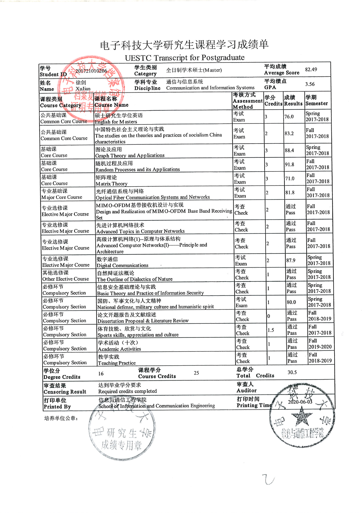

{% include base_path %}

<!-- 添加 图片 -->
<h2>Transcript Image</h2>


<!-- 添加 PDF 文件 -->
<h2>Download Transcript PDF</h2>
<a href="../files/Transcript_Undergraduate_Degree_and_Cetrificate.pdf" target="_blank">Transcript_Undergraduate_Degree</a>
<embed src="path/to/your/transcript.pdf" width="1000" height="1000" type="application/pdf">

<!-- 添加 图片 -->
<h2>Transcript Image</h2>


{% for post in site.teaching reversed %}
  {% include archive-single.html %}
{% endfor %}
